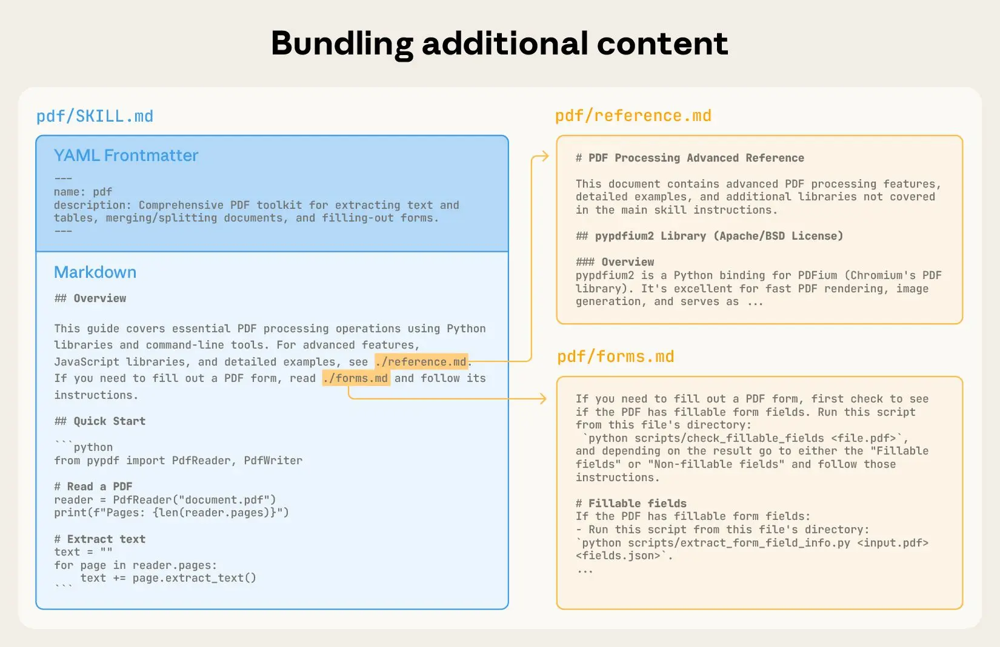
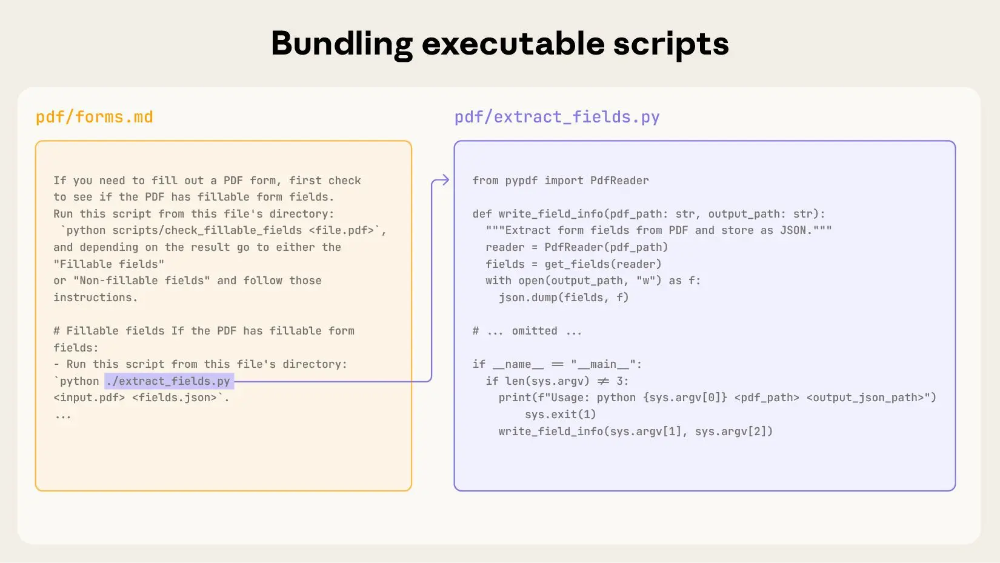

Skills
Skills are reusable markdown files that teach agents how to handle specific tasks automatically. Instead of repeating instructions every time you ask an agent to review a PR or write a commit message, you write a skill once and agents applies it whenever the task comes up.
Why Agent Skills?
As model capabilities improve, we are moving from vibe coding to general-purpose agents that interact with full-fledged computing environments. Agents can accomplish complex tasks across domains using local code execution and filesystems. But as these agents become more powerful, we need more composable, scalable, and portable ways to equip them with domain-specific expertise.
Anthropic introduces skills, in octobre 2025, to solve this by packaging procedural knowledge and company-, team-, and user-specific context into folders that agents load on demand. This gives agents:
- Domain expertise: Capture specialized knowledge, from legal review processes to data analysis pipelines to presentation formatting, as reusable instructions and resources.
- Repeatable workflows: Turn multi-step tasks into consistent, auditable procedures.
- Cross-product reuse: Build a skill once and use it across any skills-compatible agent.
Two months later (in december 2025), Anthropic, released Agents Skills as open standard[^An open standard is a standard that is freely available for adoption, implementation and updates. A few famous examples of open standards are XML, SQL and HTML.] for cross-platform portability to be adopted by a broader ecosystem.
Building a skill for an agent is like putting together an onboarding guide for a new hire. Instead of building fragmented, custom-designed agents for each use case, anyone can now specialize their agents with composable capabilities by capturing and sharing their procedural knowledge.
Where do they live ?
Skills are folders of instructions that agents can discover and each skill lives in a SKILL.md file. Personal skills are store in ~/.claude/skills (your home directory) and follow you across all projects.
On the other hand, project related skills are stored in .claude/skills inside the root directory of your repository. Anyone who clones the repo gets these skills automatically. This is where team standards live, like your company’s brand guidelines, preferred fonts, and colors for web design.
On Windows, personal skills live in C:/Users/<your-user>/.claude/skills.
Anatomy of Skills
YAML Frontmatter
At its simplest, a skill is a directory that contains a SKILL.md file. This file must start with YAML frontmatter that contains some required metadata: name and description. At startup, the agent pre-loads the name and description of every installed skill into its system prompt.
---
title: pr-review
description: Reviews pull requests for code quality. Use when reviewing PRs or
checking code changes.
---
When reviewing code in this FastAPI projects, check for:
## Code quality
1. **Readibility and clear naming** - Variables, functions, and classes should
have descriptives names.
2. **Consistent patterns** - Follow the existing router/schema/model patterns in
the codebase
[...]Progressive Disclosure
This metadata is the first level of progressive disclosure: it provides just enough information for agents to know when each skill should be used without loading all of it into context.
The actual body of this file is the second level of detail. Agents compares user requests against available skill descriptions and load the skill by reading its full SKILL.md into context.
As skills grow in complexity, they may contain too much context to fit into a single SKILL.md, or context that’s relevant only in specific scenarios. In these cases, skills can bundle additional files within the skill directory and reference them by name from SKILL.md. These additional linked files are the third level (and beyond) of detail, which agents can choose to navigate and discover only as needed.
Example
In the PDF skill shown below, the SKILL.md refers to two additional files (reference.md and forms.md) that the skill author chooses to bundle alongside the core SKILL.md. By moving the form-filling instructions to a separate file (forms.md), the skill author is able to keep the core of the skill lean, trusting that agents will read forms.md only when filling out a form.

When agents matches a skill to your request, you’ll see it load in the terminal:
🟢 Skill(pr-review)
└── Successfully loaded skill Context Window
Progressive disclosure is the core design principle that makes Agent Skills flexible and scalable. Like a well-organized manual that starts with a table of contents, then specific chapters, and finally a detailed appendix, skills let agents load information only as needed into the context window:
| Level | File | Context Window | # Tokens |
|---|---|---|---|
| 1 | SKILL.md YAML metadata |
Always loaded | ~ 100 |
| 2 | SKILL.md body |
Load when skill triggers | < 5k |
| 3+ | Bundled files (text, script, data) | Loaded as-needed | Effectively unlimited |
As user session progresses, context window grows in size:
- To start, the context window has the core system prompt and the metadata for each of the installed skills, along with the user’s initial message;
- Agent triggers the PDF skill, for example, by invoking a Bash tool to read the contents of
pdf/SKILL.md; - Claude chooses to read the
forms.mdfile bundled with the skill; - Finally, agents proceeds with the user’s task now that it has loaded relevant instructions from the PDF skill.
The following diagram shows how the context window of Claude session changes when a skill is triggered by a user’s message.

Developing and evaluating skills
Some helpful guidelines and tips for getting started with building and testing skills.
Start with Evaluation
In order to identify specific gaps in agents’ capabilities you could run them on representative tasks and observing where they struggle or require additional context. Then build skills incrementally to address these shortcomings.
Structure for scale
When the SKILL.md file becomes unwieldy, split its content into separate files and reference them. If certain contexts are mutually exclusive or rarely used together, keeping the paths separate will reduce the token usage.
Finally, code can serve as both executable tools and as documentation. It should be clear whether agents should run scripts directly or read them into context as reference.
Think from agent’s perspective
Monitor how agents uses your skill in real scenarios and iterate based on observations. Watch for unexpected trajectories or overreliance on certain contexts. Pay special attention to the name and description of your skill. Agents will use these when deciding whether to trigger the skill in response to its current task.
Iterate with agents
As you work on a task with agents, ask to capture its successful approaches and common mistakes into reusable context and code within a skill. If it goes off track when using a skill to complete a task, ask it to self-reflect on what went wrong.
This process will help you discover what context agents actually needs, instead of trying to anticipate it upfront.
Skills provide agents with new capabilities through instructions and code. While this makes them powerful, it also means that malicious skills may introduce vulnerabilities in the environment where they’re used or direct agents to exfiltrate data and take unintended actions.
It is recommended to install skills only from trusted sources. When installing a skill from a less-trusted source, thoroughly audit it before use. Start by reading the contents of the files bundled in the skill to understand what it does, paying particular attention to code dependencies and bundled resources like images or scripts.
Similarly, pay attention to instructions or code within the skill that instruct agents to connect to potentially untrusted external network sources.
Skills Library
openAI : https://github.com/openai/skills/commits/main/?after=a8924c2a35cfa290458852c4fad17c9133054c2e+104
Ressources - https://www.deeplearning.ai/short-courses/agent-skills-with-anthropic/
Towards a repeatable and deterministic Agent
Skills can also include code for Claude to execute as tools at its discretion.
Large language models excel at many tasks, but certain operations are better suited for traditional code execution. For example, sorting a list via token generation is far more expensive than simply running a sorting algorithm. Beyond efficiency concerns, many applications require the deterministic reliability that only code can provide.
In our example, the PDF skill includes a pre-written Python script that reads a PDF and extracts all form fields. Claude can run this script without loading either the script or the PDF into context. And because code is deterministic, this workflow is consistent and repeatable.

The Skills architecture
Skills run in a code execution environment where Claude has filesystem access, bash commands, and code execution capabilities. Think of it like this: Skills exist as directories on a virtual machine, and Claude interacts with them using the same bash commands you’d use to navigate files on your computer.

How Claude accesses Skill content:
When a Skill is triggered, Claude uses bash to read SKILL.md from the filesystem, bringing its instructions into the context window. If those instructions reference other files (like FORMS.md or a database schema), Claude reads those files too using additional bash commands. When instructions mention executable scripts, Claude runs them via bash and receives only the output (the script code itself never enters context).
What this architecture enables:
On-demand file access: Claude reads only the files needed for each specific task. A Skill can include dozens of reference files, but if your task only needs the sales schema, Claude loads just that one file. The rest remain on the filesystem consuming zero tokens.
Efficient script execution: When Claude runs validate_form.py, the script’s code never loads into the context window. Only the script’s output (like “Validation passed” or specific error messages) consumes tokens. This makes scripts far more efficient than having Claude generate equivalent code on the fly.
No practical limit on bundled content: Because files don’t consume context until accessed, Skills can include comprehensive API documentation, large datasets, extensive examples, or any reference materials you need. There’s no context penalty for bundled content that isn’t used.
This filesystem-based model is what makes progressive disclosure work. Claude navigates your Skill like you’d reference specific sections of an onboarding guide, accessing exactly what each task requires.